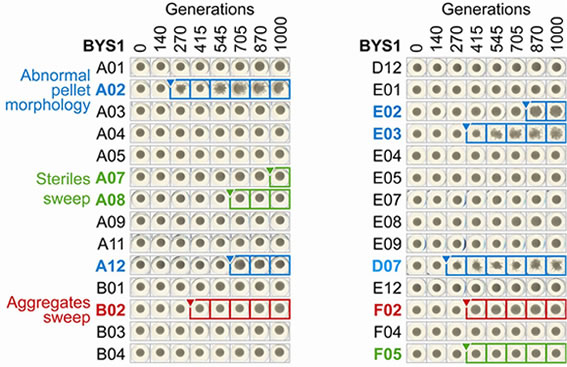

Natural selection and other evolutionary forces lead to particular patterns of evolutionary dynamics, and they leave characteristic signatures on the genetic variation within populations. We use a combination of theory and experiments to study the dynamics and population genetics of natural selection in asexual populations such as microbes and viruses.
A major focus of population genetics is to infer the action of natural selection from the genetic variation we observe in sequence data. People typically do this by comparing what they see in data to the patterns we expect to see if selection was absent. When they find deviations, they interpret them according to simple intuition about how selection (or other forces) would skew the data. But this is often rather ad-hoc, because population genetic theory has struggled to provide precise predictions about what we should expect sequence data to look like in the presence of different types of selective pressures. That is, we don't really know what we're looking for. The problem is that each mutation originally occurs in a genome which has some set of other mutations. In asexual populations or on short distance scales in sexual genomes, selection can only act on these sets of mutations in their entirety. The mutations are physically linked, so their fates are not independent. In these situations, we know how neutrality shouldn't look, but not how selection should.
A main goal of our theoretical work is to fill this gap in our understanding of the action of selection when linkage is important. This involves building theoretical models of evolutionary dynamics, and considering population genetics in the context of these models. Because selection tends to amplify the effects of rare mutations, this often involves situations where fluctuations are crucial, and out-of-equilibrium behavior is important. We have introduced several new approaches to analyzing evolutionary dynamics in such situations by developing techniques to understand the statistical behavior of large numbers of interacting random processes that are driven by fluctuations in a few rare types. This work has opened up new ways to understand the structure of genealogies and thus the statistics of genetic variation in these populations. We are using this approach to construct various types of effective coalescent approaches which provide a general framework for analyzing sequence data in the presence of selection.
Sequence data from natural populations usually only provides information from a snapshot in time. We can get much more information on evolutionary dynamics by actually observing these dynamics while they occur. Experimental evolution offers the opportunity to do just that, so we are currently using evolution of experimental yeast populations to directly observe evolution in action. We try to construct experiments in ways that allow us to infer which types of processes are most important in practice, and to measure measure important evolutionary parameters such as distributions of mutational and epistatic effects.
A main challenge of experimental evolution is that much of the important dynamics that determines the long-term fate of individual mutations happens when those mutations are rare and therefore hard to observe experimentally. We have developed a system which allows us to quickly detect certain types of mutations when they are at frequencies of a fraction of a percent within a population, allowing us to directly observe these dynamics of certain rare mutants. This class of observable mutations provides a useful probe into evolutionary dynamics which can then be further supplemented by targeted sequencing efforts.
A second challenge is that some types of events are very unlikely to happen on laboratory timescales, but could still be crucial for long-term evolution of natural populations. There is also an inherent randomness to evolution, so identical populations will often evolve very differently. These problems inspired us to develop high-throughput approaches to experimental evolution which allow us to maintain thousands of evolving lines simultaneously. This has allowed us to observe classes of mutational events which are thought to be quite important in nature but are rare enough that they have not been seen in a systematic way in earlier experiments. It also gives us power to make use of the information contained in the variation we observe in outcomes between identically evolved populations. We are currently taking advantage of these high-throughput techniques to investigate a variety of questions, such as the role of geographic structure in adaptation and the statistical structure of epistasis among beneficial mutations.